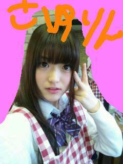

2011/1227Tue(o・・o)ぽぽっ☆
こんばんごっ(o・・o)
さゆりんごっ(o・・o)
松村沙友理です♪(ｏ・ω・)ノ))
ことしのクリスマスは
ななみんとご飯行きました!!
写真が今は載せれないのですが
また載せますので
ななみん推しの方は
お楽しみにっヘ(≧▽≦ヘ)♪
もうクリスマスも終わって
すっかり年越しな雰囲気ですねっ♪ヘ(≧▽≦ヘ)♪
のこり少ない2011年…
やり残したことはないかな～と
考える毎日ですっ(*´ー｀*)
あえて言うなら
年賀状を書いていません…m(__)m
やばい、
どうしよう…(>_<)
皆様は年賀状書きましたか!?
２５日までに
投函しましたか!?
年賀状ってめっちゃ嬉しいよね～(*^^*)
遅れてもいいから
ちゃんとだしたいと思ってます(>_<)
そういえば!!
めっちゃ私事なんですが
さゆりんに親戚が増えましたっ(*^^*)!
昨日の２６日に
いとこ夫婦に子供が産まれました!!
しかも双子ちゃんらしいです(*≧∀≦*)☆
写真みたんですが
めっちゃ可愛かったー(´；ω；`)☆☆
ほんまに早く会いたいですっ(*^^*)
ほんまよかったですーo(*⌒―⌒*)o
ほんま年末ですね～(*´ー｀*)
ほんなら今日の質問！
皆様は年越しを
どのように過ごしますか!?
さゆりんは昔、家族で
どうぶつの森ってゲームをしながら
年を越したことがあります♪
母は横で紅白をみてましたがｗｗ
今日はななみんと
お泊まりですっ(*^^*)!
ななみさん疲れて寝ちゃったよっヘ(≧▽≦ヘ)♪
寝顔見放題～(*≧∀≦*)
みなさん羨ましいやろ～(*^^*)♪笑
では、明日もみなさま頑張りましょう♪♪(ｏ・ω・)ノ))
さゆりんも頑張りますっヘ(≧▽≦ヘ)♪
風邪ひかないように…(>_<)
おやすみなさいませっ♪
さゆりん(o・・o)でしたー＼(^_^)(^_^)／
またねっ♪
2011/1224Satまいまい参ったまい☆
こんばんごっ(o・・o)
さゆりんごっ(o・・o)
みなさまお元気ですか？
松村さゆりです♪(ｏ・ω・)ノ))
２２日は銀座のソニービルで
握手会をしましたっ(*^^*)
来てくださった皆様
ありがとうございます(*´∇｀*)
凄く楽しくて
めっちゃはしゃいでしまって
またまた
たくさん汗かきました…m(__)m
お見苦しいものを
すみません(>_<)
でもほんまに会いに来てくださって
ありがとうございます(*´∇｀*)
ほんまに嬉しい～(>_<)☆
お手紙もプレゼントも
ありがとうございます(*≧∀≦*)
めっちゃ大切にしますっ!!
ほんまにありがとうございます♪
毎回思う！
イベント大好きやわぁ(*≧∀≦*)って！
そして料理…頑張る…(>_<)
クリスマスイベント楽しんで
いただけたでしょうか!?
２３日はｊｃデー
そして２４日２５日と
まだまだ乃木坂のクリスマスは
続きますので
来られる方は是非
たのしんでくださいっ(*≧∀≦*)
ちなみに
さゆりんは出ませんｗｗ
けどお仕事があるので
メンバーに相手してもらいます(ノ_・,)
さゆりんもまた
みなさんとお会いしたかったです(´；ω；`)
今年はもう会えやんのかな～(´；ω；`)
来年会いに来てなぁ～(´；ω；`)
今回はこれなかった方
全国のみなさま！
いつかお会いできるのを
楽しみにしてます♪ヘ(≧▽≦ヘ)♪
さゆりんはいつまでも
お待ちしておりますっ(*^^*)
むしろいつか出向けたらええなぁ(^^)v
前回のブログ、
変な質問すみません(>_<)
でも沢山答えてくださって
ありがとうございます(*´∇｀*)
さゆりんは
８月生まれやし、
暑いのがましかな～(>_<)
って冬は思って
夏は寒いほうがいいって
思う人ですｗｗ
すみませんm(__)m
歩きか自転車やったら
自転車かな～(*^^*)
歩くのもめっちゃ好きやけど！
あっ！今の時期
自転車寒いやんなぁ…
…うん。優柔不断…。
好きな色は
ピンクとか黄色、白色ですっ
最近水色も好きかも～(*´ー｀*)
そういえば、ゆったんが
レッスンのとき
派手に転けていたんですが
そのこけ方が
あまりにも典型的で
漫画みたいで
久しぶりに良い転けっぷりを
見たなぁと感心しました！
ゆったん大丈夫？ｗｗ
あと、橋本ななみんの地元の気温が
－２８℃になったらしいです！
ななみんってシベリア出身やっけ？と
思いましたｗｗ
北海道のみなさま大丈夫ですか!?(>_<)
明日も早起きやぁ(>_<)
みなさま
イブ楽しんでください！
握手会楽しんでください！
では、また更新します～
さゆりんでしたぁ(*^^*)
おやすみなさゆりん♪♪(ｏ・ω・)ノ))
いい夢みてなぁ♪
2011/1222Thu深川「あのヒヨコの口みたいなの何？」橋本「…まいまい。それθ(シータ)だよ…。」
おはりんごっ(o・・o)/
さゆりんごっ(o・・o)
松村さゆりですっ☆
皆様お元気ですか？
さゆりんは元気です♪(ｏ・ω・)ノ))
今日は
ついに…ついに！
乃木坂のクリスマスイベントに
さゆりんでますっ(*^^*)
今日のメンバーは
まりか、ろってぃ、れいか、みさみさ、ななみん、さゆりんですっ(*^^*)
みなさま
もしよかったら
さゆりんに会いに来てやってください！
銀座でお待ちしてます♪
さゆりん達と
握手しましょっ♪ヘ(≧▽≦ヘ)♪
みんな楽しみしております♪♪(ｏ・ω・)ノ))
ほなら、皆様に質問！
暑いのと寒いのやったら
どっちが好きですか？
どっちもアカン方は
どちらのほうが耐えられますか？笑
歩くのと自転車やったら
どちらを好みますか!?
変な質問すみません(>_<)
来られる方は握手のとき
来れないって方は
ブログで
お話ししましょう♪ヘ(≧▽≦ヘ)♪
では、さゆりん楽しんできますっ(*^^*)
また感想かきますねっ♪
2011/1219Mon夢のまた夢
あぁぁぁぁぁぁぁぁぁぁ（ ＴДＴ）
昨日の乃木坂ってどこ!?を
みられたかたぁぁぁぁぁぁ!!
すみませんんんんんんんm(__)m
ほんまにすみませんんんんんm(__)m
松村さゆりですうううううううう
見逃したかた、みれないって方
何があったのか調べないでぇぇ（つд；*)
ほんまに放送されたくなかったぁ(´；ω；`)
終わったあと
すぐ母に謝罪メールしました。返事がありませんんんんん(´；ω；`)
ママ怒ってるぅ(´；ω；`)？
ごめんなさいーm(__)m
さゆりんお手伝いもしたことあるよー・゜・(つД｀)・゜・
多分一回作ったら
作れる!!……はず…
春巻とチャーハンは
初めてやったんです～(´；ω；`)
だし巻き玉子とか
かき揚げやったらできた!!……はず…
もう言い訳甚だしいですね(T^T)
さゆりん母は
めっちゃ料理うまくて
働き者さんやったので
さゆりんは料理する機会がなくて…
母がいないときは
これまた料理上手で働き者な父が
用意してくれてたので
さゆりんは料理………………うわぁん゜・(つД｀)・゜
何言ってもあかんですよね！ごめんなさいーm(__)m
煮込みハンバーグは
作れますー・゜・(つД｀)・゜・多分
なんてこった～(´；ω；`)
さゆりんは
いつになったら目標の
何でもできるしっかりした女の子☆
になれるんや～(´；ω；`)
まぁさゆりん頑張るー（つд；*)
今日はインフルエンザの予防接種行きましたー！
注射きらいや～(´；ω；`)
いつもは母と行って
母にしがみつきながら
うけててんけど
今年は１人でした(T^T)
頑張った!!泣かんかったよ!!
あっ！
母からメールが…！
よかったー(*´∇｀*)怒ってへんかったよー(*´∇｀*)☆
母が
注射泣かへんかった!?やってo(*⌒―⌒*)o
お母さーん☆
泣かへんかったよー(*´∇｀*)＊
でも頑張ったご褒美に
自分にアイスかったんは
内緒っ☆
コメントありがとうございます(*≧∀≦*)
さゆりんと同じＢ型の方も
多いですねっ♪
家族バラバラの血液型の方もいたり！
Ｏ型さんは誰にでも輸血できるんやっ!
知らなんだっ！！(゜ロ゜ノ)ノ
ってか
家族バラバラの血液型やったら
家族どおしで輸血できやんのかっ!!
Ｏ型さんはおるけどもっ!
さゆりんはＢ型やけど
Ｂ型でよかったと思います♪
理由はないけど!!笑
今日の質問！
好きな色は何色ですか!?
質問お答えします！
さゆりんはクリスマスは
メンバーと過ごせたら
ええなぁと思ってますっ(*^^*)
ほんまは大阪帰ろかな～って
思ってんけど
本音は
イベントで皆様とお会いしたかったです(´；ω；`)
奇数と偶数がわからんのは
さゆりんじゃなくて
まいまいやで～(*^^*)
さゆりんがバラしてもうたｗｗ
こんなまいまいが可愛くて
さゆりんは好きやわ～(*^^*)＊
またネタがあるねんけど
題名にしたら
まいまいに怒られそうやから
いまは内緒♪(ｏ・ω・)ノ))
さゆりんは怒ることあるん？
ん～いらいらしたり
あんましやんかも～(>_<)
なんか常識ないこととか
されたら嫌やけど
あんま怒ったりしやんよ～(>_<)
喧嘩もしやん!!
相手が怒ってる!!って感じたら
すぐに謝ります!!弱っｗｗ
ほなら、皆様も風邪ひかんよう
気ぃつけてください！
奇跡の２ショット！！
後ろにまいやんが☆これ偶々なんですよ！！
さよならりんごっっ(o・・o)/
さゆりんでしたー＼(^_^)(^_^)／

2011/1217Sat偶数と奇数が分かりません。byまいまい
こんにちりんごっ(o・・o)
さゆりんごっ(o・・o)
みなさまお元気ですか？
さゆりんは元気です♪(ｏ・ω・)ノ))
１４日はトマト、さゆにゃんの
誕生日でしたっ(*^^*)
またまたサプライズしたよおヘ(≧▽≦ヘ)♪
またまたケーキ食べたよお♪♪(ｏ・ω・)ノ))
ふたりとも
ほんまにおめでとう♪♪(ｏ・ω・)ノ))
みなさま流星群みましたかぁ!?
さゆりんはみましたっ(｀・ω・´)!!
夜中の1時半くらいから
こたつに入って窓あけて
寝転んで空を見上げて１時間半…
一個も落ちてこやんんんんんん(´；ω；`)
なんでや～(´；ω；`)
今日ちゃうんか～(´；ω；`)？
とか考えながら、
次の日 母に電話で聞いてみたら
実は方角があったんですね!!(>_<)
さゆりんの部屋の窓からは
見えへん方角やったっぽい～(´；ω；`)
ショックー
ずっとみてたのに～
窓開けたまま
寝ちゃったくらいやのに～(´；ω；`)
って訳で 流星群みたけど
見れへんかったよ…(T^T)うぅ
みなさまコメントありがとうございます(*´∇｀*)
さゆりんの今年の漢字は
同じ方もおられたのですが
「変」です♪(ｏ・ω・)ノ))
高校生から
浪人生に変わり
乃木坂４６のメンバーになって
また生活が１８０°変わりましたヘ(・・ヘ)。。
ほんまに変化変化の年でした。
人生ってわからんですね…
だから面白いんですね～o(*⌒O⌒)ｂ♪
ほんまに乃木坂に合格できて
よかったなぁって
心底思います♪ヘ(≧▽≦ヘ)♪
素晴らしいメンバーやスタッフさんに出会えて
そして皆さんにも出会えましたっ(*^^*)
ほんまいえい♪ですわぁ♪ヘ(≧▽≦ヘ)♪
ほんなら
突然やけど質問答えますのコーナー(*^^*)
おすすめの唐揚げは？
そりゃもちろんお母さんの！！
はい、えーっと
関西にしかないかもやけど
たこ焼き屋さんの風々さんの唐揚げ!!
たこ焼き屋さんやのに唐揚げ!?
って思いますよね♪♪(ｏ・ω・)ノ))
それがめっちゃ美味しいんですよ～(^^)
もし機会があれば
是非食べてみてくださいっ♪ヘ(≧▽≦ヘ)♪
好きなアニメのセリフは？
めっちゃマイナーなんでいいですか？
まほらばっていうアニメのセリフなんですけど
男の子が女の子に告白するときの
「ひとめ見たときから
あなたにゾッコンでしたー!!」
って言うセリフが好きです(//∇//)
その時のさゆりんは
ゾッコンて言葉を知らなくて、
今も明確にはわからんけど
まぁなんかいい意味なんかな、と。笑
すみませんm(__)m
さゆりんの家族構成は？
さゆりんは父 母 姉 さゆり 弟の
５人家族ですっ☆
この家族
４つの血液型が揃ってるんです(*^^*)
父→Ｏ型
母→AB型
姉と弟→Ａ型
さゆり→Ｂ型
地味にスゴくないですか!?(*≧∀≦*)
どの血液型の人でも
助けてあげれんねっ♪
ってよく話します(^^)v
ってことで
今日の質問！
あなたの 血液型教えてくださいっ☆
そういえば、クリスマスイベント
２２日木曜日にさゆりん参加しますっ!!
欲を言えば、クリスマスイブかクリスマスも参加したかったぁヘ(・・ヘ)。。
クリスマス…さゆりん淋しいわぁ…(´；ω；`)
まぁでも２２日に皆さんに
お逢いできるので
おもいっきり楽しみましょう♪ヘ(≧▽≦ヘ)♪
なんかさゆりんが楽しむための
イベントみたいですね…m(__)m
すみませんm(__)m
皆さんに楽しんで頂けるよう
さゆりん頑張りまっすー＼(^_^)(^_^)／
ぜひ会いに来てやってください！
ほなら、明日も寒いみたいですが
頑張ろう!!
受験生のみなさん!!
センター試験まで
あと30日をきりました!!
焦らず自分を信じたら
絶対大丈夫ですっ☆
ほんまに応援してます!!
一緒に頑張りましょう(>_<)
ではまた、おやすみなさゆりん♪